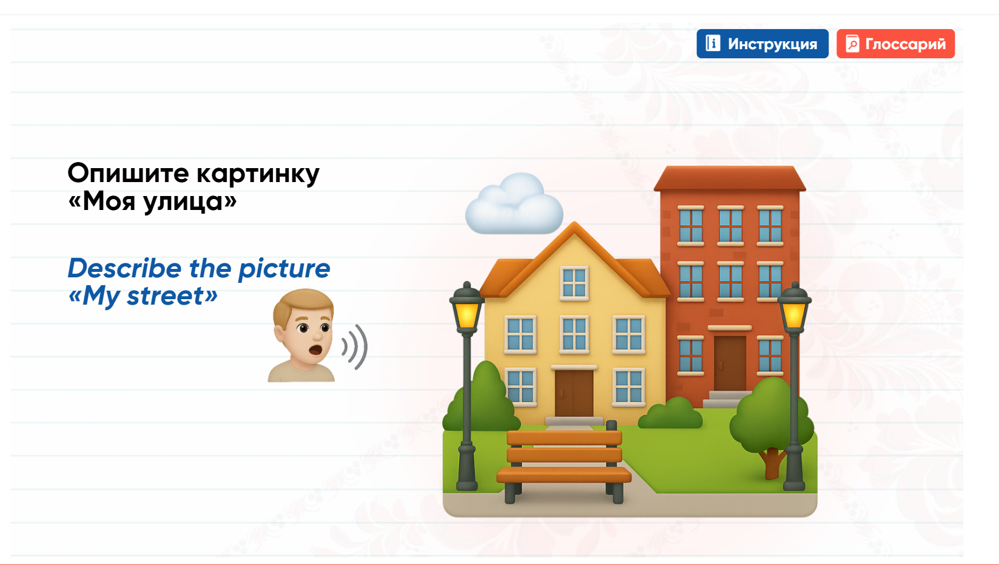

Моя улица
Рассмотрите картинку. Опишите улицу на картинке в 10 предложениях. Зачёт от 60 баллов из 100.

Вопросы к картинке
- Сколько домов на картинке? Какого они цвета?
- Какой дом выше и где он находится?
- Что находится перед домами?
- Сколько на улице фонарей и где они стоят?
- Где растут дерево и кусты?
- Что видно над домами?